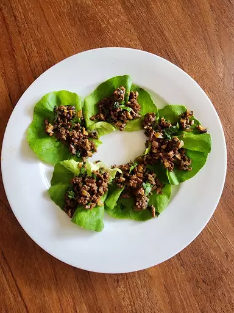

Asian Lettuce Wraps

Description
These lettuce wraps are bursting with Asian flavors, delicious, and a great idea for entertaining or a family-style meal.
To serve, allow each person to spoon a portion of the beef mixture into a lettuce leaf. Wrap the lettuce around the beef like a burrito and enjoy!
Ingredients
- 16 Boston Bibb or butter lettuce leaves
- 1 pound lean ground beef
- 1 tablespoon cooking oil
- 1 large onion, chopped
- ¼ cup hoisin sauce
- 2 cloves fresh garlic, minced
- 1 tablespoon soy sauce
Steps
- Rinse whole lettuce leaves and pat dry, being careful not to tear them; set aside.
- Heat oil in a large skillet over medium-high heat. Add beef; cook and stir until browned and crumbly, 5 to 7 minutes.
Drain and discard grease; transfer beef to a bowl. Add onion to the same skillet; cook and stir until just tender, 5 to 7 minutes.
- Stir in hoisin sauce, garlic, soy sauce, vinegar, ginger, and chile pepper sauce until well combined. Add water chestnuts,
green onions, sesame oil, and cooked beef; cook and stir until the onions just begin to wilt, about 2 minutes.
- Arrange lettuce leaves around the outer edge of a large serving platter; spoon beef mixture in the center.